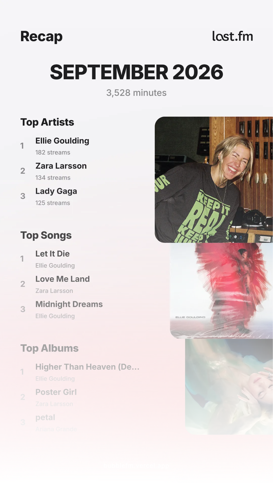
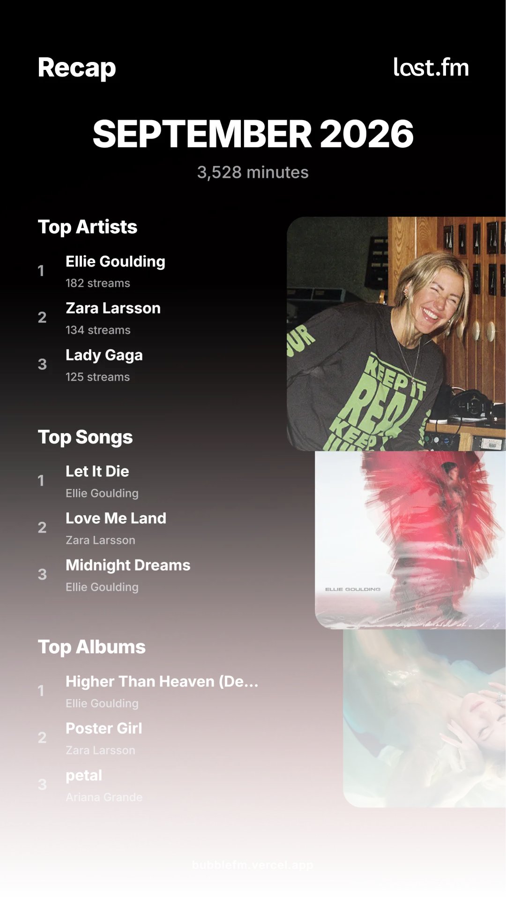

Visualize your Last.fm scrobbles & minutes
Enter your Last.fm username to generate aesthetic charts of your top artists, tracks, and total listening time.
Don't have a Last.fm account? Create one!
Your Music Taste, Beautifully Displayed
Join thousands of Last.fm users creating stunning visualizations of their listening habits. See your top artists, tracks, and total minutes listened. It's completely free and takes seconds.

